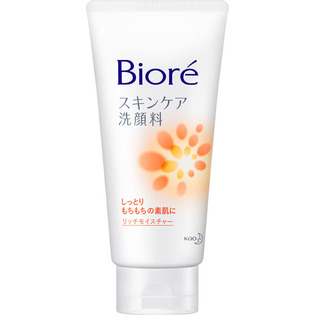

返回列表
产品名称：ビオレ スキンケア洗顔料 リッチモイスチャー

花王 ビオレ スキンケア洗顔料 リッチモイスチャー １３０Ｇ
メーカー 花王
JANコード 4901301259677
商品の特徴
しっとりもちもちの素肌に
- 成分・分量
- 水、ソルビトール、グリセリン、ミリスチン酸、ラウレス-4カルボン酸、ラウリルヒドロキシスルタイン、水酸化K、ラウレス-6カルボン酸、ラウリン酸、（アクリレーツ／アクリル酸アルキル（C10-30））クロスポリマー、エチルヘキシルグリセリン、ポリクオタニウム-7、パルミチン酸、ポリクオタニウム-39、PEG-65M、PEG-6、酸化チタン、フェノキシエタノール、メチルパラベン、EDTA-2Na、香料
- 用法及び用量
- ・適量（2～3cm程度）を水やお湯で泡立てて洗い、あとはよく流します。
・残り少なくなったら、キャップを回してはずすと、最後までムダなく使えます。